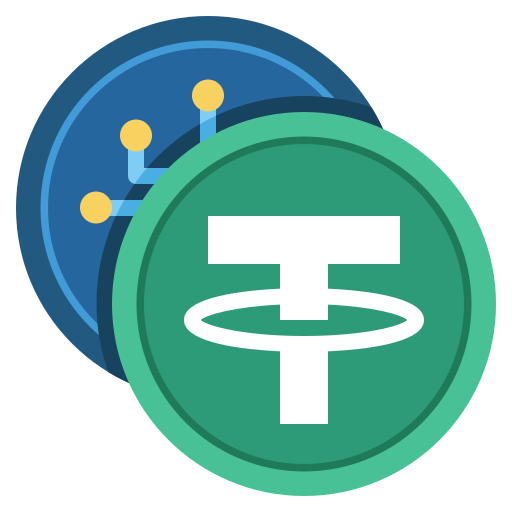

As principais Criptomoedas:
Atualmente, existem milhares de criptomoedas em circulação no mercado, cada uma surgida com um diferente propósito. Nesse conteúdo, você conhecerá as principais criptomoedas do mercado, o ranking delas em relação ao valor de mercado, além de algumas informações a mais sobre estas.
The Big Five:
Clique nos botões para passar o Slide.Bitcoin (BTC)
Sua finalidade é servir como meio alternativo ao sistema finaceiro global, garantindo maior velocidade e segurança nas transações, além do uso de blockchains.
Cotação: US$20 mil; Market Cap: US$500 bilhões; Total de unidades desponiveis: 21 milhões;
Ethereum (ETH)
Trata-se de um do criptos mais bem sucedidos. Essa cripto, surgiu entre 2013 e 2014, com a junção de alguns co-fundadores, entre eles está o Vitalik Buterin.
Diferentemente do Bitcoin, o principal objetivo do Ethereum é servir de base para aplicações
chamadas
Cotação: US$ 2 mil;Market Cap: US$ 250 bilhões;Unidades disponíveis: US$ 120 milhões./li>
Tether (USDT)
Essa criptomoeda faz parte da classe chamada de stablecoins, que são criptos criadas para serem menos voláteis, geralmente o seu valor estar ligado ao de uma moeda comum. Criada em 2014 por Brock Pierce, Reeve Collins e Craig Sellars, originalmente com o nome de Realcoin, tendo a paridade de 1:1 com o dólar americano.
Como é um stablecoin, suas contações não variam muito, tendendo a sempre se aproximar de US$1 por unidade.
Cotação: US$ 1;Market Cap: US$ 70 bilhões;Unidades disponíveis: 73 bilhões.
USD Coin (USDC)
Tal como a Tether, aqui temos um cripto stablecoin que também busca paridade com o dólar americano. Criada em 2018 por Jeremy Alaire e Sean Neville.
Duas curiosidades: Essa cripto possui uma empresa que cuida do seu desenvolvimento, The Centre. E, em seu latro, existe uma mistura entre dólares americanos e títulos do tesouro dos EUA.
Cotação: US$ 1;Market Cap: US$ 50 bilhões;Unidades disponíveis: 53 bilhões.
Cardano (ADA)
Criada em 2017 com inspiração no polímata italiano do século XVI Gerolamo Cardano, teve como seu funfador Chales Hoskinson, que também é um dos co-fundadores da rede Ethereum.
A grande novidade que essa cripto traz é o metódo de mineração chamado de Proof of Stake, esse mecanismo consumene menos energia e tem uma menor capacidade computacional. Além disso, esse cripto busca a descentralização pura em todos os processos.
Cotação: US$ 0,50;Market Cap: US$ 18 bilhões;Unidades disponíveis: 34 a 45 bilhões.